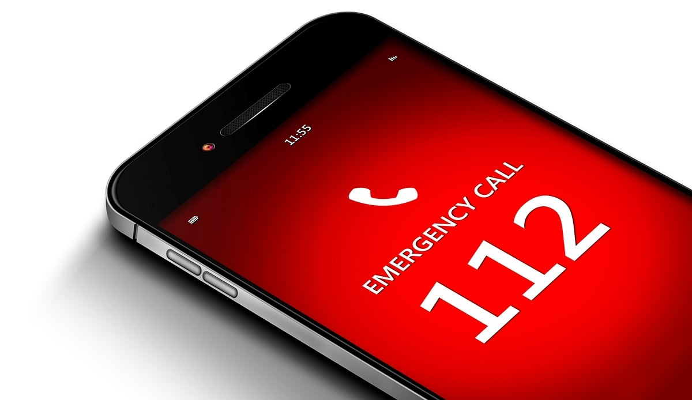

Altre Informazioni Utili
Dettagli pratici e consigli per vivere al meglio la tua esperienza a Malta.
Aspetti Culturali e Sociali:
- Malta è profondamente cattolica: chiese ovunque, "festas" religiose estive con processioni e fuochi d'artificio.
- Maltesi cordiali. Frasi come "grazz(i)" (grazie) o "jekk jogħġbok" (per favore) sono ben viste.
- Sliema è vivace ma tranquilla; St. Julian's è il cuore della vita notturna.
Praticità Quotidiana:
- Acqua del rubinetto potabile ma dal sapore particolare (NON BERE, PUÒ CREARE PROBLEMI DI STOMACO).
- Bagni pubblici presenti ma variabili per pulizia. Usare quelli nei bar/ristoranti se necessario.
- I negozi generalmente aprono alle 9:00 e chiudono tra le 19:00 e le 20:00, con pausa pranzo nei piccoli centri.
- I centri commerciali hanno orario continuato.


Numeri Utili
- Emergenze: 112 (valido per polizia, ambulanze, vigili del fuoco)
- Polizia: (+356) 2122 4001
- Ospedale Mater Dei: (+356) 2545 0000
Sicurezza del Bagaglio

Considerazioni Finali:
- Ogni viaggio ha i suoi imprevisti: la flessibilità è la chiave.
- Goditi il ritmo locale, il cibo, e l'atmosfera rilassata dell'isola.